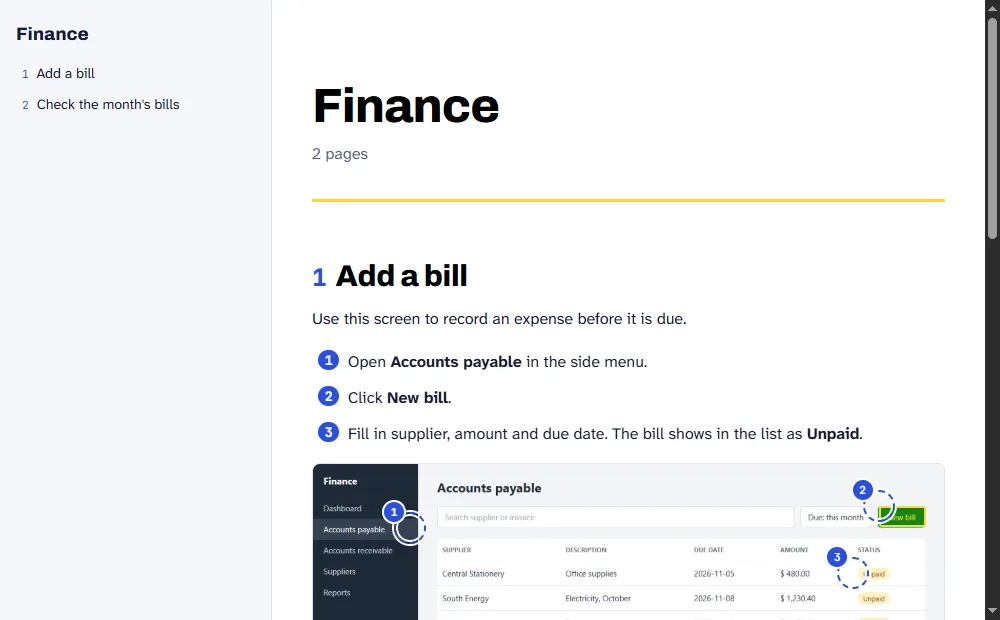
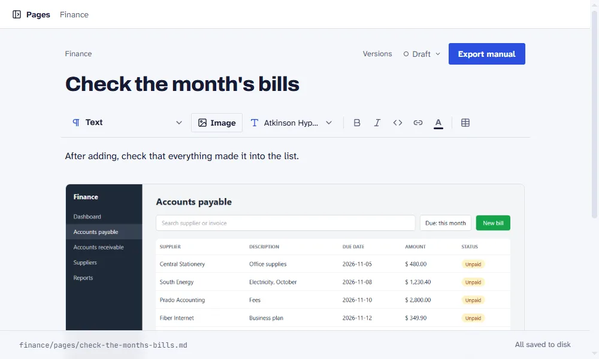
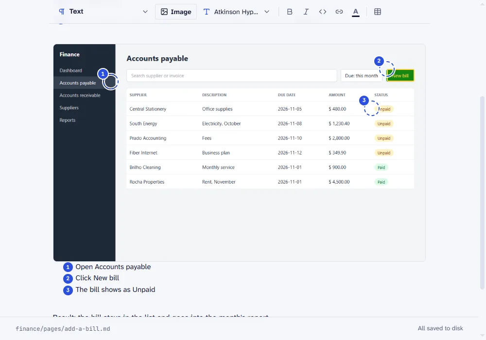
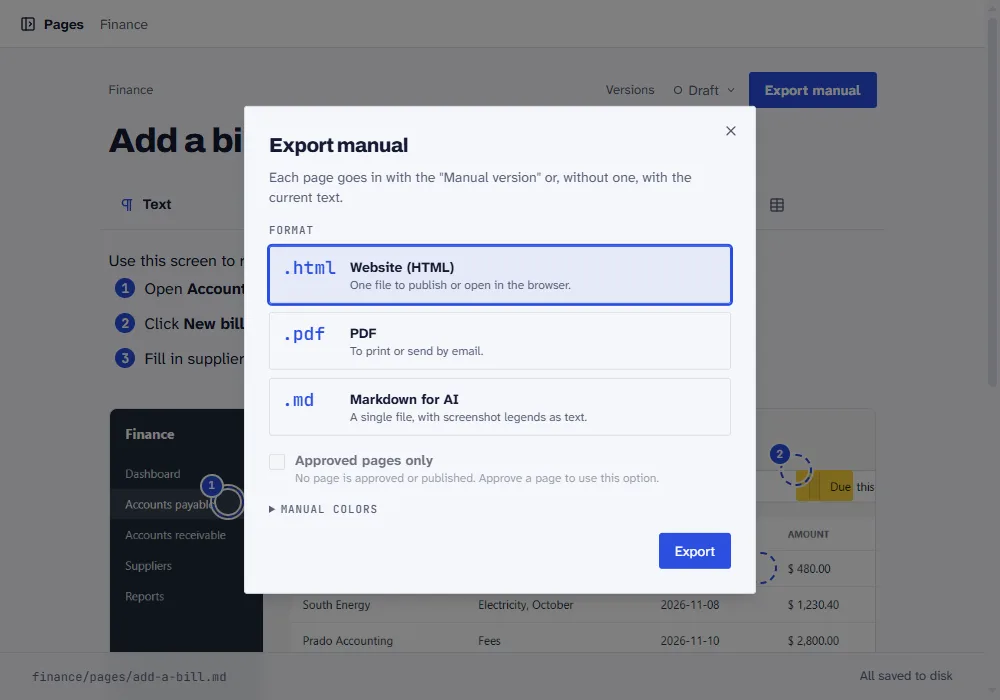

Manual builder · open source
Snap it, explain it. Explicaí builds the manual.
The free, open source manual builder. Paste screenshots, mark them up, write the steps and export to PDF, HTML and Markdown.
npx explicai manuals
Needs Node 20.12 or newer. Runs on your machine, no account, no cloud.

Why it exists
Every system needs a manual. Almost none has a good one.
Doing it by hand takes days: take the screenshot, mark the screen, write each step, export. Then the screen changes and you start over.
Launch. The system is live and the manual is next week's job.
Hand over. The client wants the manual with the system.
Update. The screen changed and the manual still shows the old one.
How it works
From screenshot to manual in three steps
-
1 Paste the screenshot.
Copy your system's screen and paste it into the page. The image goes into the manual.

-
2 Mark the screen.
Add numbered markers, highlights, arrows and clickable areas, and write what the reader does at each one.

-
3 Export.
Generate PDF, HTML or Markdown in one click.

Explicaí does not capture the screen. The screenshot comes from you.
See it done
See a manual made with Explicaí.
“Finance” is a made-up system for this example. The manual is the HTML Explicaí exports, unedited.
Formats
PDF for people who read. Markdown for people who automate.
Every manual is a folder of Markdown with its images, kept in git next to your code. People read the PDF or the HTML site. An AI reads the same files.
finance/
manual.json
pages/
add-a-bill.md
assets/
accounts-payable.png
accounts-payable.png.json
---
title: Add a bill
---
1. Open **Accounts payable** in the side menu.
2. Click **New bill**.
3. Fill in supplier, amount and due date.
Open and free
MIT license, code on GitHub.
The build process is written up on the blog. Documenting a system should not cost more than building it.
Quick questions
What stands between you and installing
- Do I need an account?
- No. Explicaí runs on
localhostand saves to a folder you choose. - Does it work in Portuguese and English?
- The interface does. The manual is in whatever language you write the steps in.
- What do I need to install?
- Node 20.12 or newer.
npxfetches the rest.
Start with your first manual.
npx explicai manuals